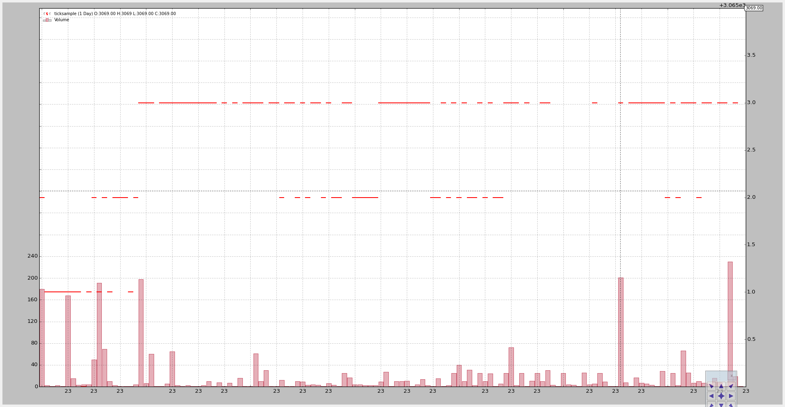

Tick Data and Resampling¶
backtrader could already do resampling up from minute data. Accepting tick
data was not a problem, by simply setting the 4 usual fields (open, high, low,
close) to the tick value.
But passing the tick data to be resampled produced the same data again. As or release 1.1.11.88 this is no longer so. Now
- TimeFrame (backtrader.TimeFrame) has been extended to contain constants and names for “Ticks”, “MicroSeconds” and “Seconds”
- Resampling can manage the 3 aforementioned timeframes and sample them up.
Note
Because tick data is the lowest possible timeframe it can actually be “compressed” (n bars to 1 bar) but not be sampled up from a smallest timeframe.
The new release contains a small tickdata.csv sample added to the sources
data a new sample script resample-tickdata.py to play with it.
Updated on Oct 06, 2015
Updated the script to use the new Cerebro.resampledata method which
avoids the need to manually instantiate a backtrader.DataResampler
The default execution doesn’t touch the data:
$ ./resample-tickdata.py
Producing this chart:
Compressing 3 ticks to 1:
$ ./resample-tickdata.py --timeframe ticks --compression 3
Producing this chart:
After the compression we no longer have single “ticks” but “bars”.
Now compressing to seconds and 5 bars compression:
$ ./resample-tickdata.py --timeframe seconds --compression 5
With a new chart:
And finally to minutes. The sample data contains tick data from 4 different minutes (the last tick in the file is the only tick for the 4th minute):
$ ./resample-tickdata.py --timeframe minutes
With a 4 bars (at the top it can be seen the final price was 3069). The 4th bar is a single point given for this minute a single tick is present in the file.
The script usage:
$ ./resample-tickdata.py --help
usage: resample-tickdata.py [-h] [--dataname DATANAME]
[--timeframe {ticks,microseconds,seconds,minutes,daily,weekly,monthly}]
[--compression COMPRESSION]
Resampling script down to tick data
optional arguments:
-h, --help show this help message and exit
--dataname DATANAME File Data to Load
--timeframe {ticks,microseconds,seconds,minutes,daily,weekly,monthly}
Timeframe to resample to
--compression COMPRESSION
Compress n bars into 1
And the code.
from __future__ import (absolute_import, division, print_function,
unicode_literals)
import argparse
import backtrader as bt
import backtrader.feeds as btfeeds
def runstrat():
args = parse_args()
# Create a cerebro entity
cerebro = bt.Cerebro(stdstats=False)
# Add a strategy
cerebro.addstrategy(bt.Strategy)
# Load the Data
datapath = args.dataname or '../../datas/ticksample.csv'
data = btfeeds.GenericCSVData(
dataname=datapath,
dtformat='%Y-%m-%dT%H:%M:%S.%f',
)
# Handy dictionary for the argument timeframe conversion
tframes = dict(
ticks=bt.TimeFrame.Ticks,
microseconds=bt.TimeFrame.MicroSeconds,
seconds=bt.TimeFrame.Seconds,
minutes=bt.TimeFrame.Minutes,
daily=bt.TimeFrame.Days,
weekly=bt.TimeFrame.Weeks,
monthly=bt.TimeFrame.Months)
# Resample the data
data = cerebro.resampledata(data,
timeframe=tframes[args.timeframe],
compression=args.compression)
# add a writer
cerebro.addwriter(bt.WriterFile, csv=True)
# Run over everything
cerebro.run()
# Plot the result
cerebro.plot(style='bar')
def parse_args():
parser = argparse.ArgumentParser(
description='Resampling script down to tick data')
parser.add_argument('--dataname', default='', required=False,
help='File Data to Load')
parser.add_argument('--timeframe', default='ticks', required=False,
choices=['ticks', 'microseconds', 'seconds',
'minutes', 'daily', 'weekly', 'monthly'],
help='Timeframe to resample to')
parser.add_argument('--compression', default=1, required=False, type=int,
help=('Compress n bars into 1'))
return parser.parse_args()
if __name__ == '__main__':
runstrat()


{kind=link}
{kind=link}
{kind=link}
{kind=link}